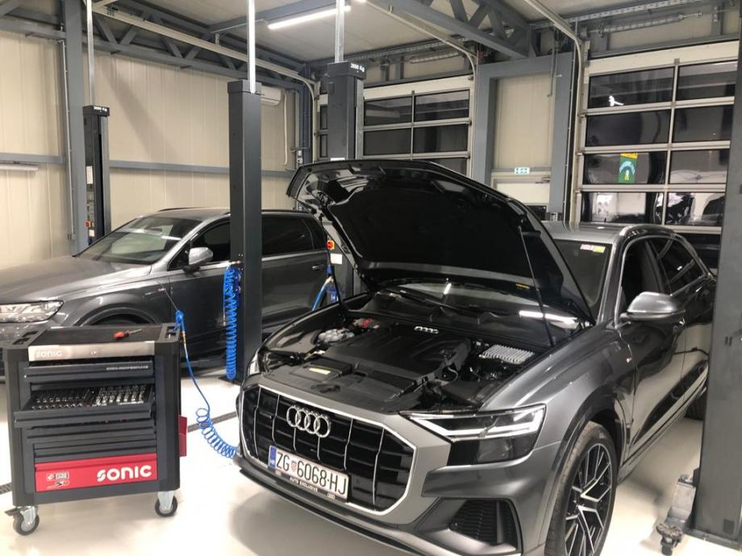
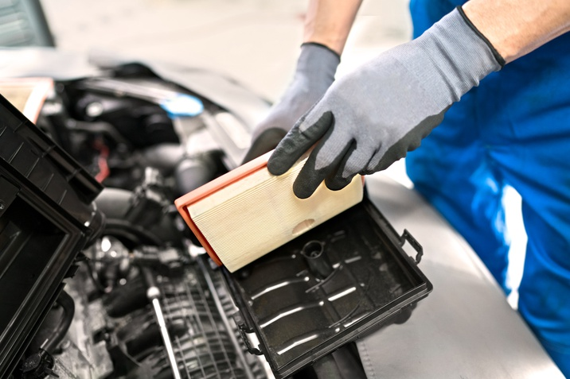
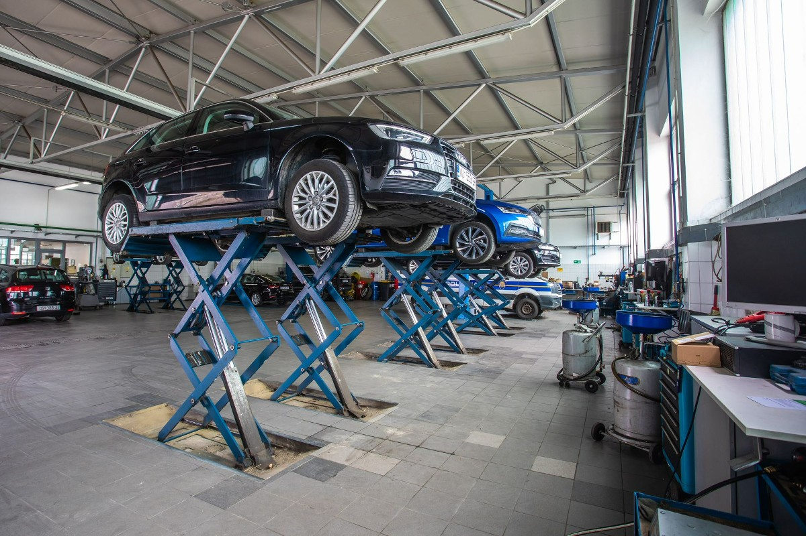

Zašto odabrati Audi servis?
Odabir pravog servisa za vaš Audi automobil je ključan za očuvanje njegove dugovječnosti i performansi. Audi je brend koji je poznat po vrhunskom kvalitetu i naprednoj tehnologiji, pa je važno da vaš automobil bude servisiran od strane stručnjaka koji su specijalizovani za ovaj brend. Evo nekoliko razloga zašto bi trebalo da odaberete Audi servis:
1. Stručnost i obuka tehničara
Audi servisi zapošljavaju tehničare koji su specijalizovani za rad sa vozilima ove marke. Kroz redovnu obuku i sertifikaciju, oni su u toku sa svim inovacijama i tehničkim unapređenjima koja Audi nudi. To znači da ćete vašem vozilu obezbediti najviši nivo stručnosti prilikom svakog servisnog zahvata.
2. Originalni delovi
Korišćenje originalnih Audi delova u servisu garantuje dugoročnu pouzdanost i performanse vašeg automobila. Iako možda deluju skuplje od alternativnih opcija, originalni delovi su dizajnirani da savršeno odgovaraju vašem vozilu, čime se sprečavaju eventualni problemi u budućnosti.
3. Napredna dijagnostika
Audi servisi koriste najnoviju dijagnostičku opremu koja omogućava preciznu analizu problema sa vozilom. Ovo znači da će kvarovi biti identifikovani brzo i efikasno, čime ćete uštedeti vreme i novac na nepotrebnim popravkama.
4. Održavanje vrednosti vozila
Redovno održavanje u Audi servisu pomaže u očuvanju vrednosti vašeg vozila. S obzirom na to da su ovi servisi u potpunosti posvećeni Audi markama, oni su najbolji izbor ako želite da zadržite svoj automobil u vrhunskom stanju, što može biti posebno važno ukoliko razmišljate o njegovoj budućoj prodaji.
5. Garancija na usluge i delove
Audi servis nudi garanciju na sve obavljene usluge i zamenjene delove. Ovo vam pruža dodatnu sigurnost jer znate da, ako se nešto ne dogodi kako treba, servis će se pobrinuti da se problem reši na njihov račun.
Zaključak
Odabirom Audi servisa, birate vrhunski kvalitet, stručnost i sigurnost. Bez obzira na to da li je u pitanju redovno održavanje, popravka ili ugradnja novih delova, servis specijalizovan za Audi je najbolji način da osigurate dugotrajan i bezbrižan rad vašeg automobila.